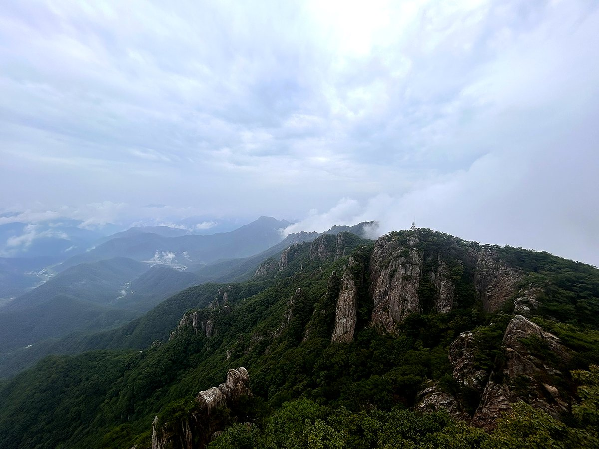
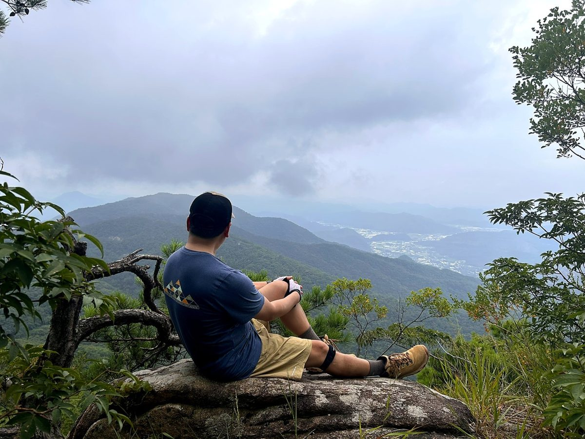
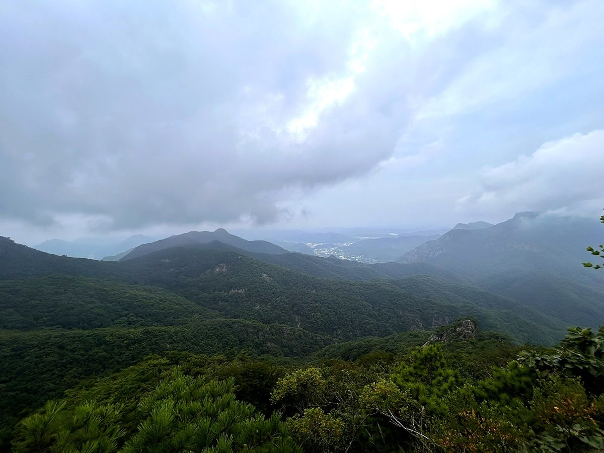
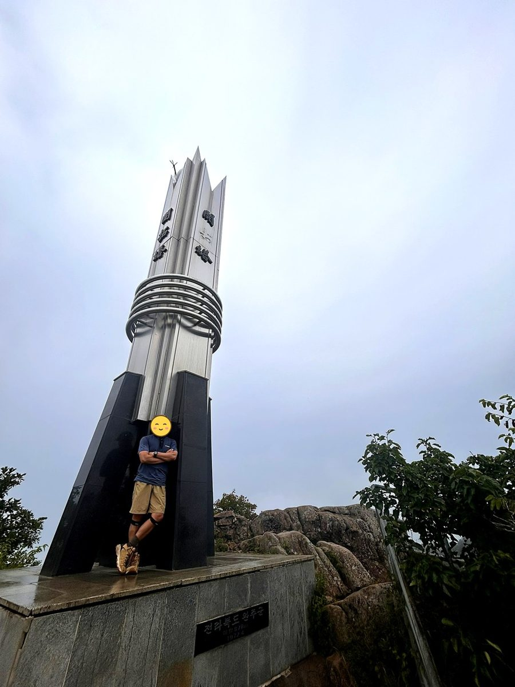
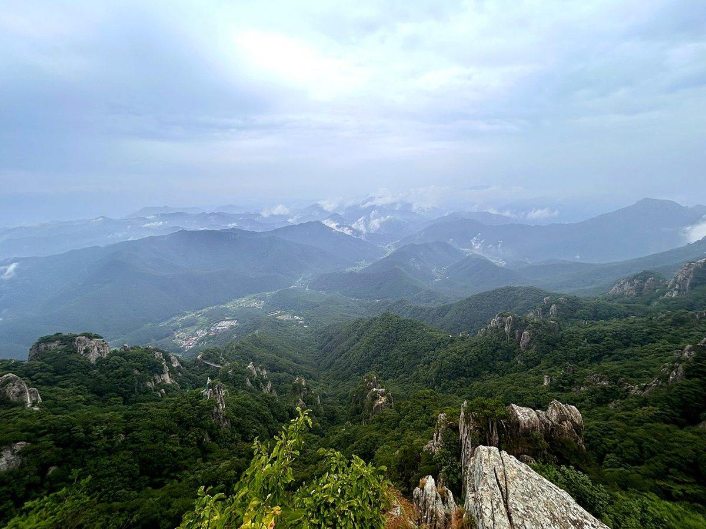
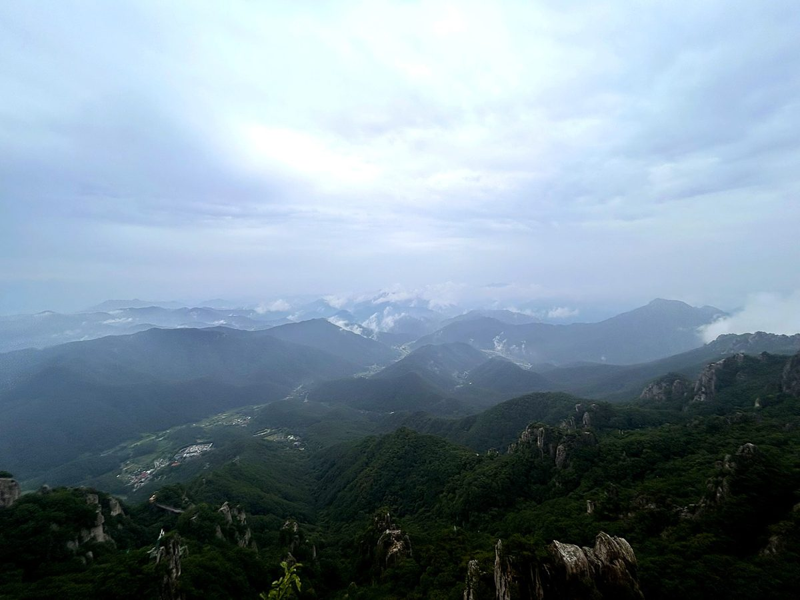
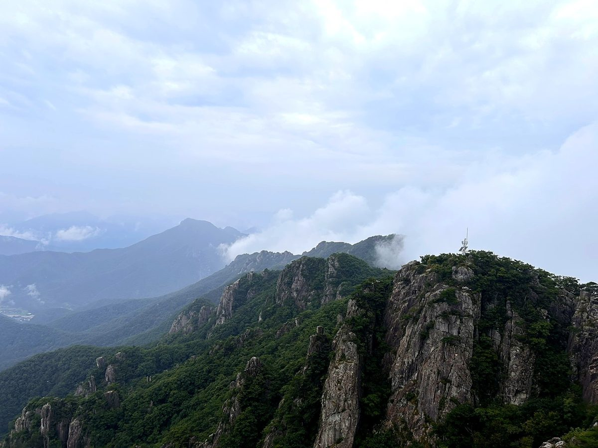
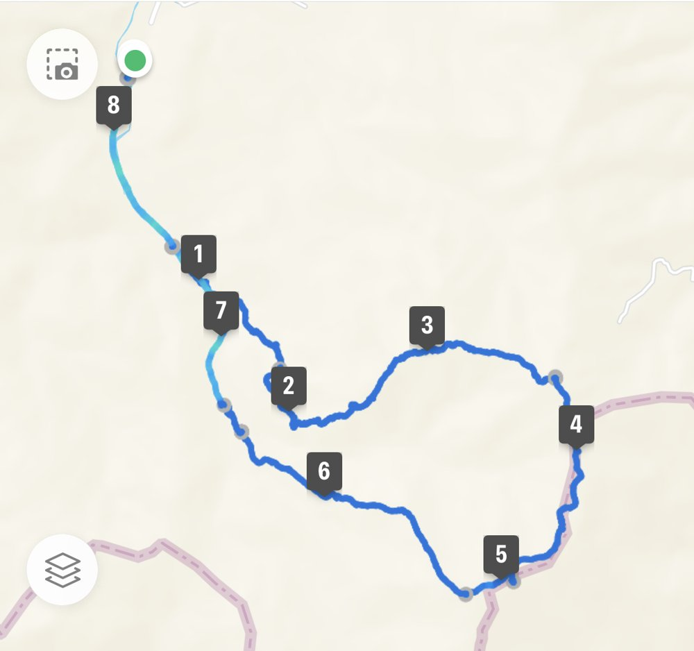

대둔산은 등산객과 관광객이 같은 길을 걷는 드문 산입니다. 케이블카로 중턱까지 오른 뒤 구름다리와 삼선계단을 지나 정상 마천대에 닿는 구성이 워낙 잘 알려져 있습니다.
케이블카는 927m 구간을 5~6분에 오릅니다. 하차장에서 구름다리를 건너 삼선계단을 지나면 15분 만에 마천대입니다. 케이블카에서 정상까지 1시간이면 충분합니다.
삼선계단은 거의 수직에 가까운 철계단으로 대둔산의 상징입니다. 고소공포가 있으면 우회로를 이용할 수 있습니다. 전체 코스를 걸으면 5.9km에 3시간 정도입니다.
등반기록
대둔산 수락주차장 → 석천암 → 낙조대 → 마천대(정상) → 군지구름다리 → 수락폭포 → 선녀폭포 → 수락주차장
막히는 고속도로를 뚫고 수락주차장에서 출발
대전 근처에 위치한 대둔산을 등반하기로 결심하고 새벽같이 집에서 출발했으나, 오늘은 광복절날, 경부고속도로가 새벽부터 막힌다. 아마도 광복절 행사 때문인지 천안을 지나고 나서야 길이 트임. 코스 선택을 완전히 잘못함, 집에서 평소 대전까지 2시간 반 거리를 거의 4시간 반이나 걸림.
집사람을 달래며 안전 산행 시작 (10시 11분 출발).
산행코스: 대둔산 수락주차장 → 석천암 → 낙조대 → 마천대(정상) → 군지구름다리 → 수락폭포 → 선녀폭포 → 수락주차장 (등반지도상 2코스로 올라 1코스로 하산)
오르는 길, 전망이 트이는 곳


대둔산 정상, 마천대 878m




군지구름다리와 수락폭포로 하산

이 산의 포인트
- 삼선계단 — 거의 수직에 가까운 철계단
- 금강 구름다리
- 케이블카로 927m 구간을 5~6분에 이동
- 정상 마천대와 개척탑
등산 코스
| 코스 | 거리 | 소요 | 난이도 |
|---|---|---|---|
| 케이블카 → 마천대 (대표) 대둔산 주차장 → 케이블카 → 구름다리 → 삼선계단 → 마천대 |
약 2km(편도) | 1시간 | 중 |
| 마천대 → 수락주차장 종주 주차장 → 케이블카 → 구름다리 → 삼선계단 → 마천대 → 군지구름다리 → 승전탑 → 수락주차장 |
약 5.9km | 3시간 | 중 |
| 도보 왕복 (케이블카 미이용) 주차장 → 등산로 → 구름다리 → 마천대 → 원점 |
약 5km | 3시간 내외 | 중 |
| 수락 원점회귀 (석천암 → 낙조대 → 마천대) 대둔산 수락주차장 → 석천암 → 낙조대 → 마천대(정상) → 군지구름다리 → 수락폭포 → 선녀폭포 → 수락주차장 |
약 8.6km | 6시간 30분 내외(휴식 포함) | 중 |
인증장소
마천대 개척탑 일대의 정상 표지에서 인증합니다.
가는 길
- 자가용
- 대둔산도립공원 주차장을 이용합니다. 주말에는 매우 붐빕니다.
- 대중교통
- 대전·전주에서 대둔산행 버스를 이용합니다.
주차장
- 수락계곡 주차장충남 논산시 벌곡면 수락리
수락 원점회귀 코스(석천암 → 낙조대 → 마천대)의 들머리입니다.
- 대둔산도립공원 주차장(논산 방면)충남 논산시 벌곡면 수락리
수락계곡 코스 들머리입니다.
- 대둔산 케이블카 주차장(완주 방면)전북 완주군 운주면 산북리
금강구름다리·삼선계단으로 가는 가장 일반적인 들머리입니다. 단풍철에는 도로가 정체됩니다.
주차 요금과 면수는 자주 바뀌고 성수기에는 임시 주차장·셔틀이 운영되기도 합니다. 출발 전에 지도 앱이나 공원 사무소로 한 번 더 확인하세요.
맛집
논산은 강경 젓갈로 유명합니다. 대둔산 자락에서는 능이버섯전골과 토속청국장, 보리굴비정식을 내는 집이 많습니다.
- 대둔산골들머리에서 3.2km전북특별자치도 완주군 운주면 대둔산로 2268
- 황토집사람들들머리에서 3.4km충청남도 금산군 태고사로 444 황토집사람들
- 다솜차반들머리에서 14.7km대전광역시 유성구 계백로421번길 29 (방동)
- 신풍매운탕들머리에서 12.5km충청남도 논산시 신풍길 84-15
- 정자나무가든들머리에서 11.0km대전광역시 서구 장안로 226
한국관광공사에 등록된 음식점입니다. 맛집 순위가 아니며, 영업시간과 휴무일은 바뀔 수 있으니 먼 길이라면 미리 전화해 보세요.
언제 가면 좋은가
가을 단풍이 절정이며 이 시기 주말에는 케이블카 대기가 매우 깁니다. 겨울 상고대도 아름답습니다.
알아두면 좋은 것
- 삼선계단은 일방통행으로 운영되는 때가 있고, 고소공포가 있으면 우회로를 이용하세요.
- 단풍철 주말에는 케이블카 대기가 1시간을 넘기도 합니다.
- 케이블카를 쓰면 인증까지 1시간이면 충분합니다.